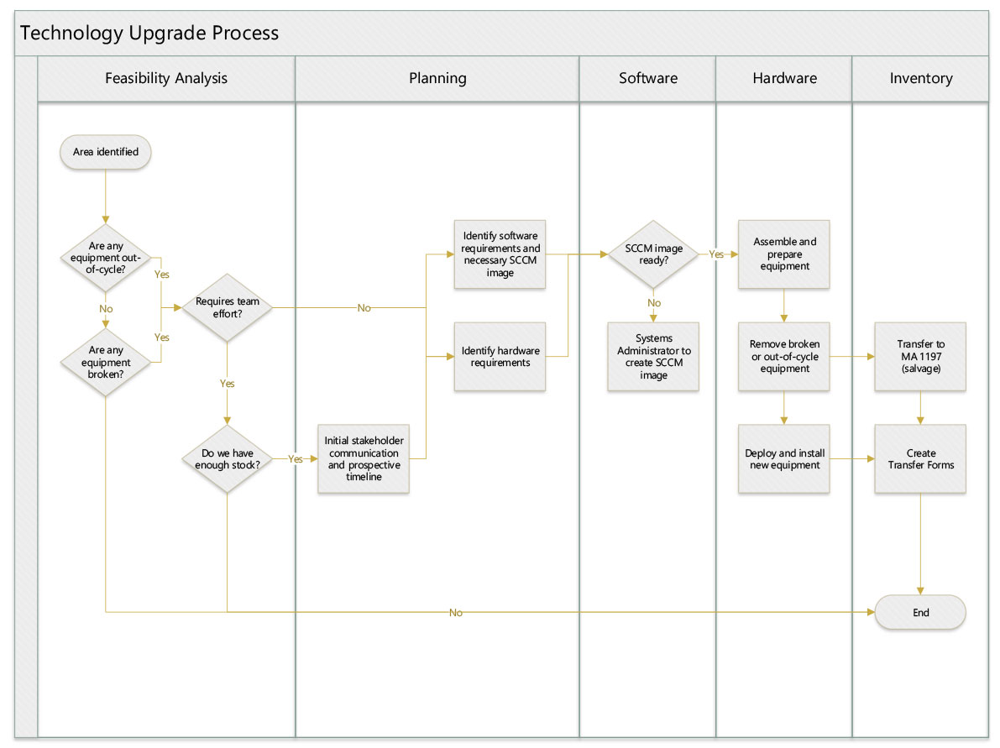
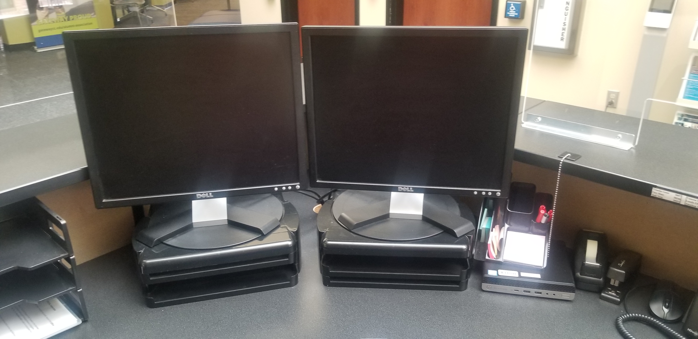
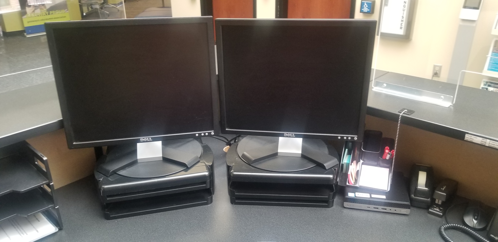
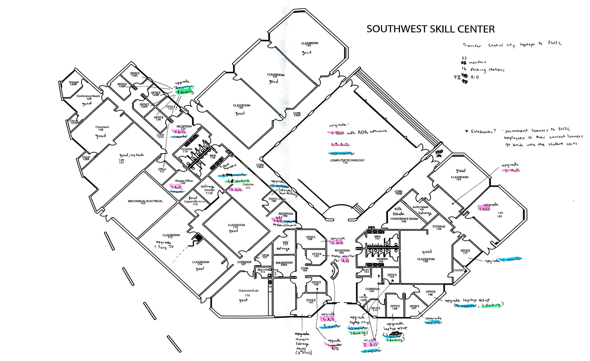
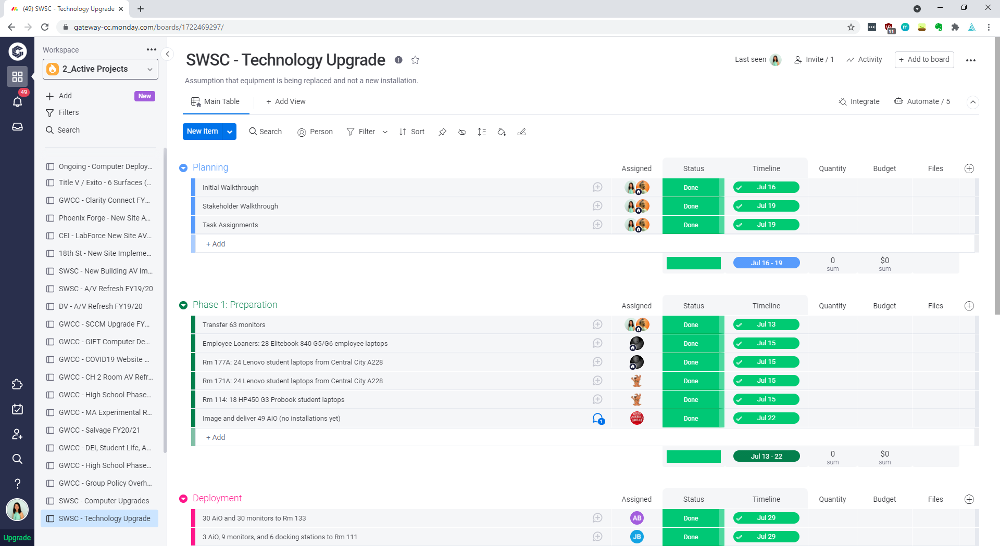
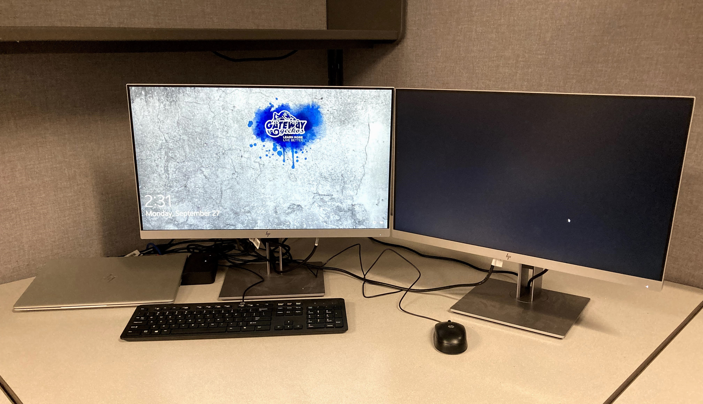
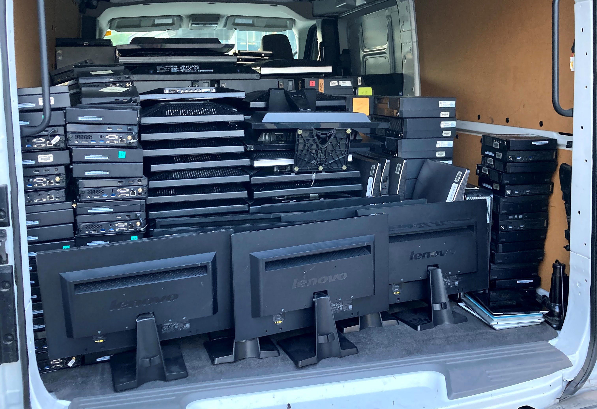

Project Background
How might we create a deliberate and comprehensible process for technicians to improve project success rates so that we can best serve students and employees?
The Information Technology department at the GateWay Community Colleges has noticeably struggled with improving project success rates over the past few years.
According to extensive and well-documented surveys, Information Technology projects tend to have a combined rate for partial failures (over budget, late, and/or have an unsatisfactory target) and outright failures (abandoned, canceled prior to completion, or not used after implementation) that fall between 68% and 84% based on year and location (Bronte-Stewart, 2009; Cox, 2010). Based on the opinion of senior team members at GateWay, the Information Technology department has an 80% estimated project failure rate.
To illustrate the global scale and impact of the situation, the determined cost of project failure across the European Union was 142 billion euros (166 billion dollars) in 2004. Imagine how our project failure rate is financially impacting GateWay in terms of capital asset investment as well as future student enrollment and current student retention.
The Standish Group had been commissioned to research the cause of project failure in Information Technology over a span of 10 years (1994-2004). The report stated that 175,000 projects were studied, amounting to more than 250 billion dollars: only 16.2% of projects succeeded; 31.1% were outright failures; and 52.7% cost 189% more than originally budgeted.
Considering this data, GateWay’s Information Technology department’s estimated project failure rate of 80% is understandable, yet still unacceptable as it hinders our ability to serve students and employees.
The Approach
Numerous publications address critical factors for high failure in Information Technology projects in their research. The recurrent risk factors listed in the publications that align with our department are below:
- Unclear objective requirements and specifications
- Poor stakeholder communication
- Lack of project management
- Unsatisfactory executive management support
- Substandard technical competencies and support
- Insufficient user involvement and training
In an effort to address the critical risk factors associated with our department, I suggested purchasing a user-friendly, cost-effective, and collaborative project management platform that the department could adopt in February 2020. In April 2020, the executive managers decided to purchase the platform I recommended. Unfortunately, the platform was not implemented effectively due to lack of training for technicians, limited executive management input, and unclear project objectives. Rather than strategically planning projects in advance, the platform was used for tracking responsibilities and tasks retroactively. As a result, adding a project management platform to the department did not affect the risk factors nor improve the projects’ success rates at that time.
As a secondary attempt to rectify these risk factors, I created a technology upgrade workflow in June 2021 that is still in place today. This process minimizes a need for constant executive management direction and allows technicians to work more independently. With this new process in place, the department is now able to use the previously-incapitable project management platform to track projects efficiently. Most notably, stakeholder communication was incorporated into the process. This was one of the major turning points that recified a majority of the risk factors listed above. Clear stakeholder engagement allows technicians to clarify objectives, requirements, and specifications for the requested technology upgrades for students and employees. As an added benefit, the stakeholders are now more understanding with unexpected issues or timeline shifts and stakeholder-technicians relations have greatly improved. From these conversations, a tentative project timeline can be created on the project management platform and communicated to the stakeholder conveying realistic expectations. Templates are created on the project management platform, so technicians with limited training can easily fill them out. This process ultimately allows any technician to initiate a project with the team.
 Technology upgrade workflowThe Result
To test the new process, technicians planned and upgraded the Southwest Skill Center campus. The workflow created for this project is as follows:
Feasibility Analysis
During the initial visit to Southwest Skill Center, we recognized the outdated technology based on looks alone. We mapped out a tentative plan to conduct a feasibility test prior to reaching out to the stakeholder. The technology there was beyond the computer refresh date (out-of-cycle), which should be 5 years. According to the Financial Management System (FMS), the technology being utilized at the time dated back to at least 2011.
 Student computer setup in the Computing Commons

Employee reception desk and office computer setup
Student computer setup in the Computing Commons

Employee reception desk and office computer setup
This initiative required the entire team to participate and a large amount of stock equipment. After verifying that this project is feasible, we reached out to the stakeholder (site manager).
 Initial walkthrough with upgrade notationsPlanning
We scheduled a walkthrough with the site manager in order to clarify the purpose of each room (classroom, office, storage) to best address the technology needs. During this visit, software and hardware requirements were gathered. Then, a prospective timeline had been created and sent to everyone involved. After coordinating with all parties, a finalized timeline was created in the project management platform.
 Translating the upgrade notations to an actionable planSoftware and Hardware
While creating the deliverables for the technicians, specific devices were specified with exact imaging and software requirements.
The new equipment to be deployed were assigned in phases where preparation and delivery came first. Then, equipment removal came next where existing setups containing broken and/or out-of-cycle equipment were uninstalled and brought back to Washington. Deployment came next where installation of the new equipment was set up.
 Upgraded employee computer setupTransfer forms had to be filled out for the old equipment with asset tags being removed from the campus and new equipment with asset tags going to the campus. Lastly, the salvage delivery where the old equipment is loaded into vans, transfer forms remove the equipment from GateWay, and unloaded at surplus.
 Transferring old equipment to surplusThe technicians were able to surpass expectations and complete the campus upgrade within 3 weeks, which was a week ahead of schedule. This had been a morale booster for the team to complete a project and we were able to drastically improve the stakeholder’s original perspective towards our department. This campus had previously been neglected as all other campuses had their upgrades done in 2018 and 2019. By addressing Southwest Skill Center’s needs, we were able to complete standardizing the technology amongst all of the campuses.
Works Cited
Bronte-Stewart, Malcolm. (2009). “Developing a Risk Estimation Model from IT Project Failure Research,” European Conference on Management of Technology.
McManus, J., & Wood-Harper, T. (2007). “Understanding the Sources of Information Systems Project Failure (A study in IS project failure in Europe).” Journal of the Management Services Institute, 51(2).
Daniels, C. B., & LaMarsh, W. J. (2007) "Complexity as a Cause of Failure in Information Technology Project Management," IEEE International Conference on System of Systems Engineering.
Cox, L. (2010). “Information technology project success: four stages of excellence using creative project management tools.” PMI® Global Congress 2010.